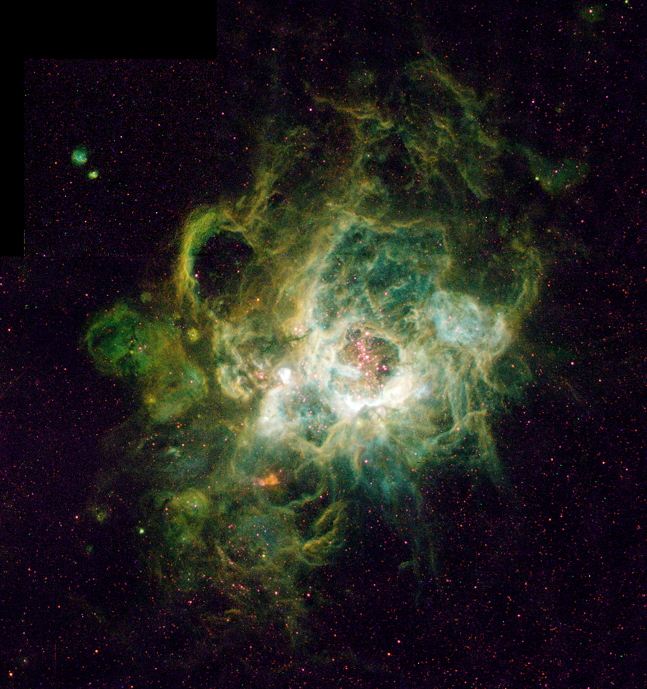

Júpiter 5º planeta del Sistema Solar y el más grande, tiene un díametro de 11 Tierras.
Representación artística de Betlegeuse. Una de las estrellas gigantes más cercanas al Sol, con un diámetro equivalente a
1180 Soles o 128.865 Tierras, esta estrella es diminuta en comparación con las más grandes registradas.
Nébulosa planetaria. Restos mortales de una estrella pequeña
como el Sol, que en vez de explotar, se expande hasta desintegrarse.
Esta es la nébulosa Ojo de Gato, cercana y pequeña mide unas 1.484.853.241 Tierras.

NGC604 la nebulosa más grande conocida. Un objeto extragaláctico perteneciente a la Galaxia del Triángulo.
Mide unas 1.128.551.247.841 (más de un billón) Tierras o 14.380.000.000.000.000 Km.
El tamaño de una galaxia ridiculiza el de cualquier objeto contenido en una, nuestra galaxia, la Vía Láctea,
de tamaño mediano-pequeño mide unas 78.480.552.503.531 Tierras o 999.999.200.000.000.000 Km.
Esta imagen es de Andrómeda, una galaxia muy muy cercana a la Vía Láctea en términos relativos y de aspecto similar.
La Gran Muralla de Hércules-Corona Boreal es la estuctura más grande conocida en el universo, la componen una cadena
de galaxias nuclearmente activas,
cuásares
que dibujan una línea en el cosmos tan grande, que se teoriza que su existencia se debe a que, cuando el universo era mucho más pequeño y estos inmensos objetos eran del tamaño de unos pocos nanómetros, los
ecos cuánticos del nacimiento del cosmos los alinearon, muchas estructuras como esta hoy día tienen impresa la huella de esos ecos.
Mide unas 7.424.839.485.638.047 Tierras, es decir 94.607.304.726.000.000.000.000 Km o una 9ª parte del Universo Observable.